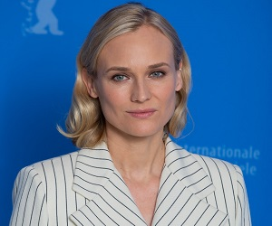

Neon Nightmares

Green Tooth
- Name: Damon
- Deedname/Shadowname: Green Tooth
- Apparent Age: Early 30s
- Breed: unknown
- Tribe/Tradition: Black Spiral Dancers
- Auspice/Faction: Philodox
- Visible Merits/Flaws: N/A
- General Disposition and/or Description: unknown
Su
- Name: Susan
- Deedname/Shadowname: Hyu-kthyo
- Apparent Age: Late 20s
- Breed: unknown
- Tribe/Tradition: Black Spiral Dancers
- Auspice/Faction: Ahroun
- Visible Merits/Flaws: N/A
- General Disposition and/or Description: unknown
Cyrus
- Name: Cyrus
- Deedname/Shadowname: Karsh-Qua
- Apparent Age: Early 20s
- Breed: unknown
- Tribe/Tradition: Black Spiral Dancers
- Auspice/Faction: Ragabash
- Visible Merits/Flaws: N/A
- General Disposition and/or Description: unknown
Audrey

- Name: Audrey
- Deedname/Shadowname: Flesh-Singer
- Apparent Age: Mid 30s
- Breed: unknown
- Tribe/Tradition: Black Spiral Dancers
- Auspice/Faction: Galliard
- Visible Merits/Flaws: N/A
- General Disposition and/or Description: unknown
Daughter
- Name: Emma
- Deedname/Shadowname: Daughter
- Apparent Age: Early Tweens
- Breed: Drone
- Tribe/Tradition: unknown
- Auspice/Faction: SEED
- Visible Merits/Flaws: Child
- General Disposition and/or Description: Detached and unemotional, there is almost nothing left of the girl who has been possessed and hollowed out by the Weaver spirit within her.
Father
- Name: Michael
- Deedname/Shadowname: Father
- Apparent Age: Mid Forties
- Breed: Drone
- Tribe/Tradition: unknown
- Auspice/Faction: BD
- Visible Merits/Flaws: N/A
- General Disposition and/or Description: Largely silent and intentionally both unassuming but imposing, he seems the perfect paternal figure and defender. He is extremely resilient and strong, but a touch on the slow side.
Mother
- Name: Jessica
- Deedname/Shadowname: Mother
- Apparent Age: Early Thirties
- Breed: Drone
- Tribe/Tradition: unknown
- Auspice/Faction: SD
- Visible Merits/Flaws: N/A
- General Disposition and/or Description: Alternately the perfect suburban housewife and a frighteningly fast 'mama bear,' the only truly universal aspect known is how fiercely protective she is of Emma. She has also proven a fairly passable actor when interacting with those oblivious to her true mission.